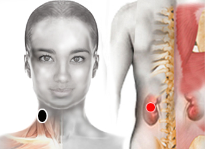

Benavides
Par
nervio vago - riñón (I)

Generalidades:
Reservorio universal, impactar y rastrear todo de nuevo
Especial: Regula el sistema nervioso y la función estomacal, ver disfunción del estómago.
Temas relacionados: